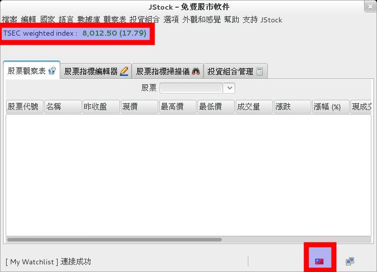
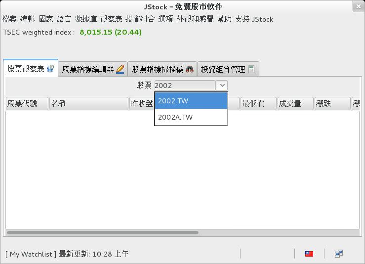
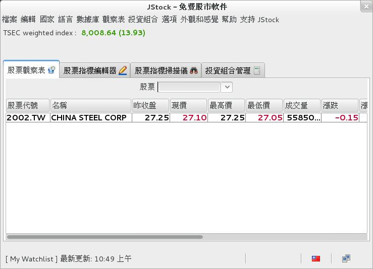
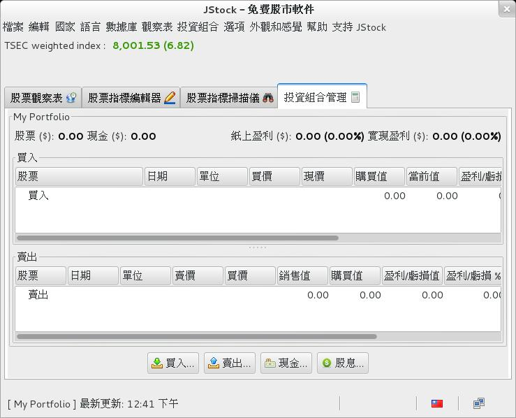
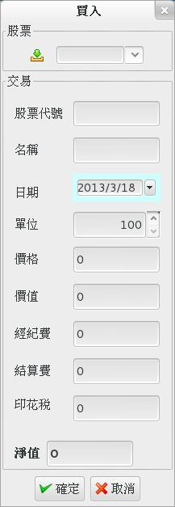
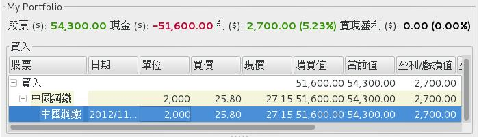
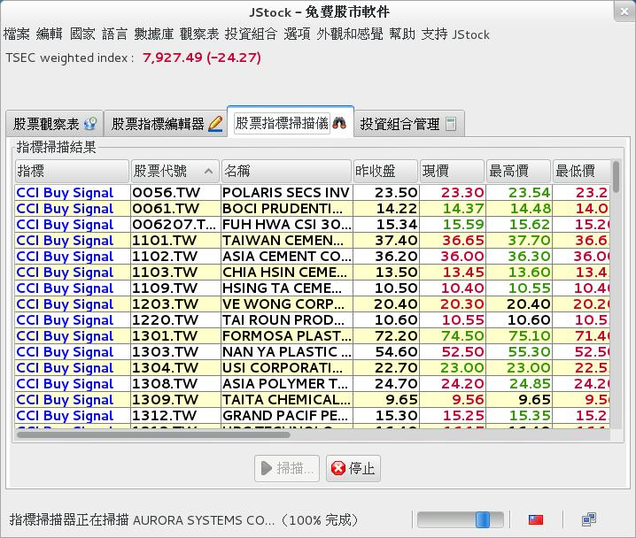

JStock－開源的股票看盤軟體

簡介
JStock 是一款開源的股票看盤與管理軟體。
以一般市面上的股票軟體為標準，JStock 的功能介面可說是相當地簡單。不過正因為簡單，這也反而容易上手。
您可以用 JStock 管理股票的買入賣出狀況，可以用它監視一系列您有興趣的股票，可以在股價低於或高於某數值時送出警告。此外您還可以設計一些「指標」（如 CCI 買進訊號），用這些指標來一口氣過濾分析大量的股票。當然，基本的技術分析線圖也是有的。
關於 JStock，就聽我介紹一下心得吧。
安裝與執行
JStock 支援 Windows、Mac OS X、Linux 與 Solaris。請到此處下載程式檔案：https://jstock.sourceforge.net/index.html。
如果是 Linux 版本，下載後不用安裝，直接執行 jstock.sh 就能啟用。由於本程式用 Java 撰寫，您必需要事先準備好 Java 環境。實測結果不需要 Oracle Java，Open JDK 就可以了。此外也別忘記打開 jstock.sh 的執行權限再執行。
如果是 Windows 版本，則會要您將 JStock 裝進電腦才能使用。此時若您的電腦中沒有 Java 環境，JStock 會很貼心地自動幫您下載下來安裝。不過不知為何下載安裝的版本會有亂碼，所以還是自己動手抓來裝比較乾脆。您可以從這邊（https://java.com/zh_TW/download/index.jsp）下載到最新版的 Java 環境安裝檔。
開始使用
▲ 圖1：JStock 的初始畫面
剛進入 JStock 時，我們看到的是上面這個畫面。
在一切開始前，您必需先選擇一個想要處理的股市。比方說假若您打算觀察台灣股票，就得先將 JStock 的股市設定為台灣。方法為透過最上方功能列表中的【國家】來選擇。
成功後，畫面會變成以下這樣：

▲ 圖2：當選擇了新股市時，紅框部份的內容會變更。
建立觀察表
「觀察表」是用來即時看盤用的。您可以有多個獨立的觀察表。
要將某支股票加入觀察表，只須要在股票輸入欄中輸入股票代號（如中鋼的代號是 2002.TW）然後按 Enter 就可以了。
代號可以在以下位置查詢：https://tw.stock.yahoo.com/h/kimosel.php

▲ 圖3：輸入股票號碼

▲ 圖4：將股票加入觀察表中的樣子。順便提醒一下，JStock 的漲跌採用世界上較為常見的表示法－－紅色表示下跌，綠色表示上漲。和台灣傳統正好相反！
其實在 JStock 的原始設計中，本來也可以不輸入代號而直接輸入股票名，不過在台股股市中，很遺憾地，這股票名可是全英文的，不能用中文（奇妙的是陸股可以用簡中顯示）。我正在和 JStock 開發者提交問題和部份的 Patch，可是開發者可能太忙了暫時沒理我，看看這問題之後能不能解決吧。
除了基本的數字以外，如果在觀察表中的某支股票上雙擊，還能叫出歷史線圖供我們做一些進一步的技術分析。如下：
▲ 圖5：雙擊股票名後叫出的歷史線圖。從左上角的功能選單中可以切換更多不同的線圖，K 線圖也有。
記錄投資組合
請切換到【投資組合管理】頁籤。

▲ 圖6：投資組合管理畫面，分為買入和賣出兩部份。如果看不到下方的賣出，請把視窗拉大一點。
這裡的投資組合，其實就是一個股票專用的記帳表。當您買賣股票時可以同步在這裡登記。JStock 會自動利用目前股價計算您的營利狀況、畫出不同時間賣出時的獲利圖，也可以同步記錄手續費與稅金（需到選項視窗中打開才有這功能）。
記錄的方法為：點擊下方的【買入】、【賣出】按鈕。

▲ 圖7：點買入按鈕後出現的視窗。注意：如果您沒有打開設定畫面中的「記錄經紀費」功能，經紀費等欄位就不會出現。
記錄好之後，JStock 會自動將您的資料與當前市面上的現值做比較，看您有多少帳面盈利（您還沒賣出的）與實際盈利（您已經賣出的）。
透過賣出按鈕可以做出賣出動作，操作方式與買入按鈕雷同。

▲ 圖8：JStock 會自動計算出您當前的盈利狀況。
您還可以透過右鍵選單，要求 JStock 繪出營利狀況變化圖來。算是很貼心的功能了。
掃描股票指標
JStock 對短線投資者提供了一個有趣的功能：掃描股票指標。
掃描股票指標是說，您可以指定一個或多個指標條件（如 CCI 買入訊號），然後用這個條件來掃描您的觀察表或整個股市。有命中的股票就會被篩選出來。
做法很簡單：首先進入【股票指標編輯器】頁籤，點擊【安裝】按鈕，選擇【從 JStock 服務器安裝】，再從服務器下載您需要的指標。
完成後切換到【股票指標掃描儀】頁籤，按掃描，選擇想掃描的範圍。

▲ 圖9：用 JStock 掃描整個股市尋找買入訊號。
如前所述，JStock 非常輕量，主要功能就只是這些。如果您對看盤軟體沒有更多複雜的要求，甚至早就在嫌看盤軟體太肥太慢，這就快來試試它順不順手吧！